Continued story of upgrading hardware in my iMac G3. I briefly touched on the upgrades on my blog section, but I want to add there was just a little more to the story — not like when purchasing it, but more after and the process.
The iMac used to have 256MB of RAM, 128 each stick. Now it has a single gigabyte (1GB) plus a change of the CMOS battery, which isn't the standard CR2032 3V lithium coin battery we know and love, it's a 1/2AA 3.6V battery. Very colorful battery, honestly, made in Israel. Very cool to see where things used to be made, unlike just everything made in China now. So to solve that issue I ordered a Chinese battery that's rated for it.
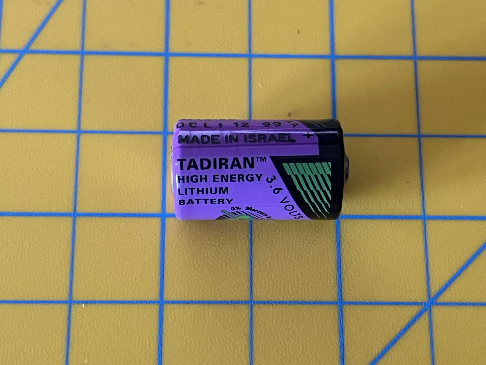
original battery (very old)
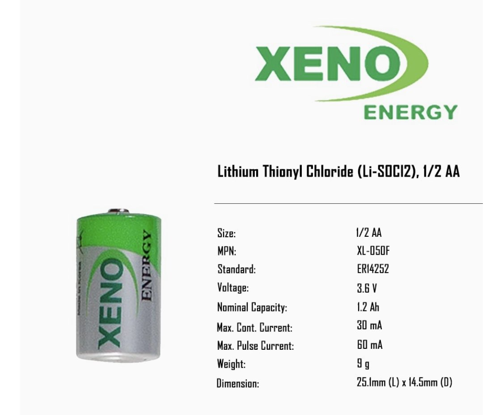
replacement according to specs maybe its worst idk but should be fine
I also ordered 2 sticks of 512MB (yes, I paid $18 for 2 sticks of 512MB in 2026, almost $40 total), the maximum for this model was 1GB, which was huge.
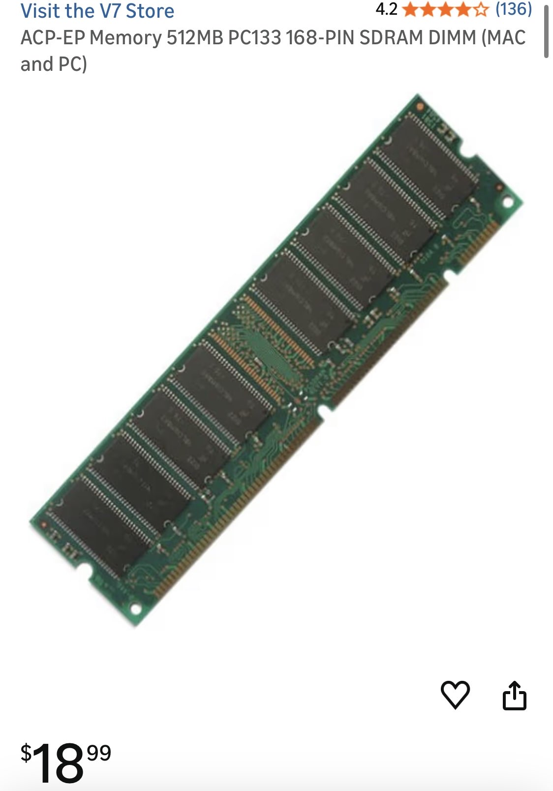
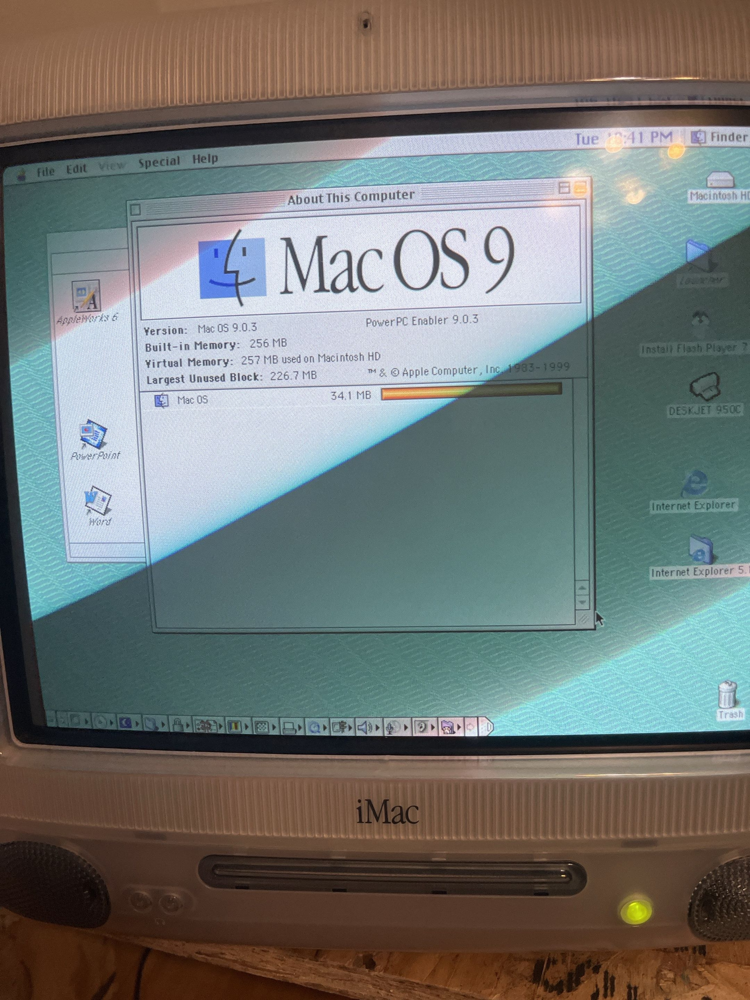
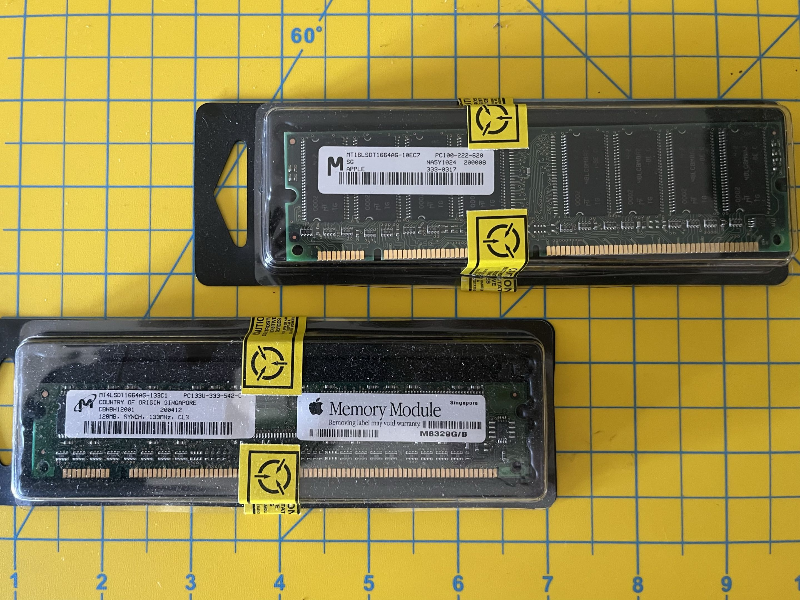
official Apple "ram" sticks vs modern replacement
Speaking of being made somewhere else. My iMac is Mexican as well. Never thought a computer and I would have something in common. ¡Viva México!
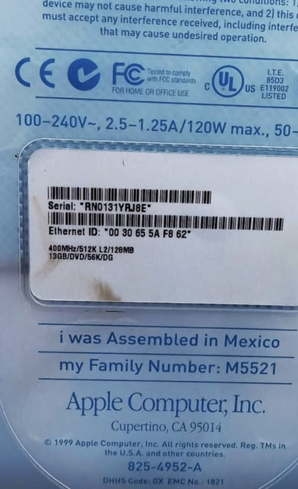
Now I know the nationality of this computer, I can now..
Opening it was scary since these have a reputation for breaking — the plastic does not age well. So I knew I had to be careful. I don't have friends with spare ones or friends in general…. so I had to make sure this was perfect. I put it face down, unscrewed the foundation screws, pulled and pinched upward to remove it. I checked the plastic clip, and gave a sigh of relief.
I watched this Action Retro video before I did anything. I just needed the cover off so I didn't have to change the hard drive to an SSD:
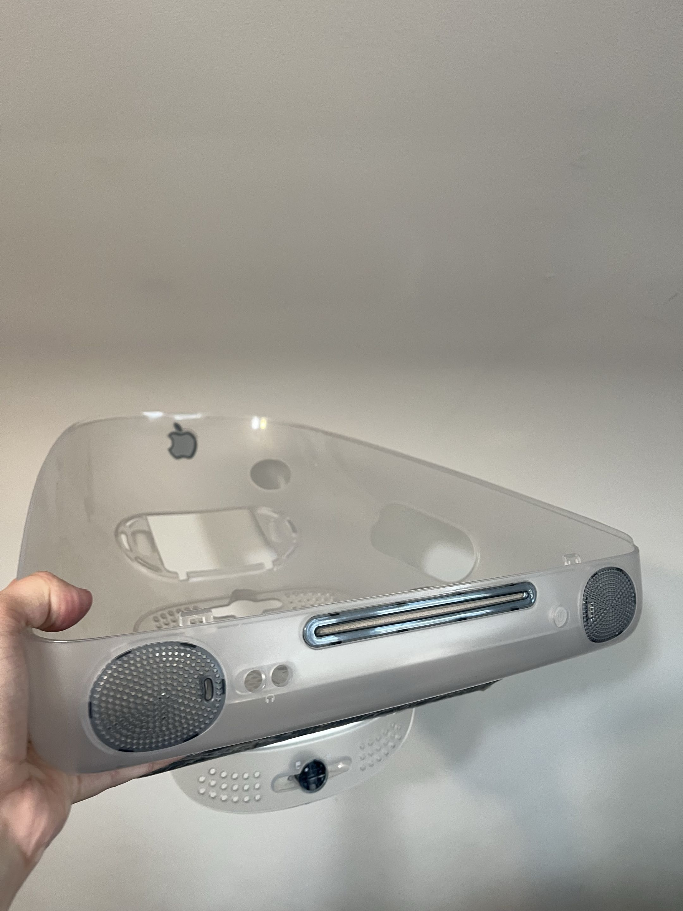
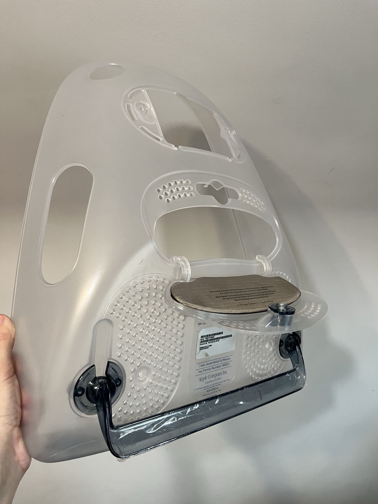
Beautiful — all in one piece. Now that's removed we can finally — nope — metal shell to prevent any short circuits or small parts…. and I needed to take the screws off which are mounted to the hard drive/disc. I FUCKING DROPPED A SCREW INSIDE OF IT, ITS ROLLING INSIDE OF IT.
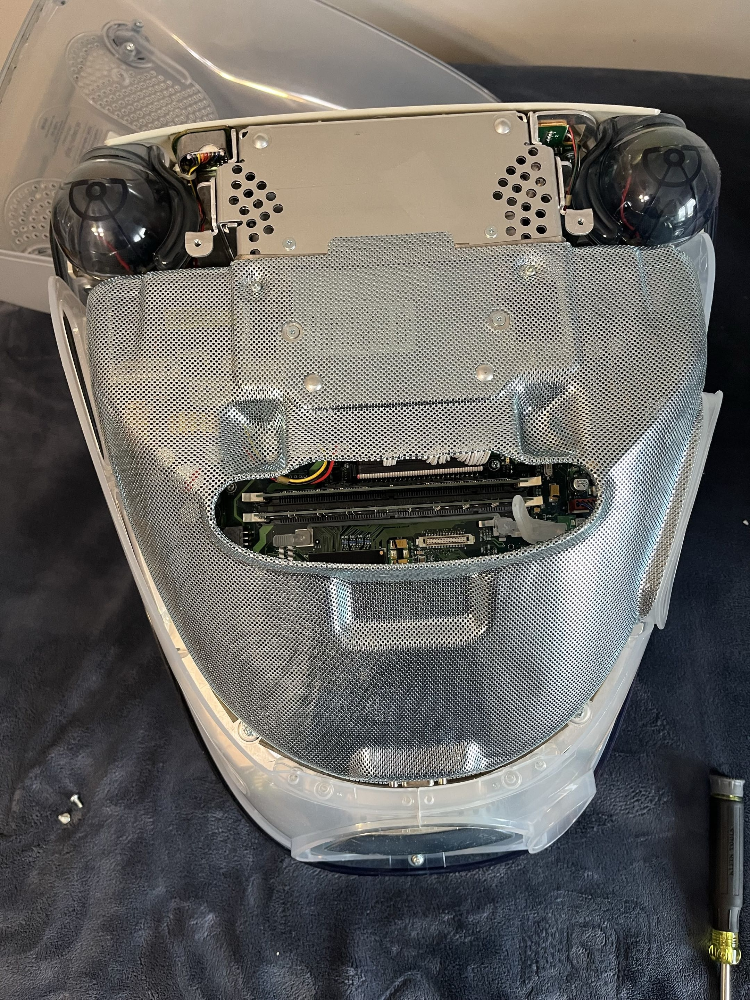
Got a magnet and fished it out.. Okay… now that's fine we can remove the metal plate and we get the full board.
NSFW — Computer porn, she's getting naked…
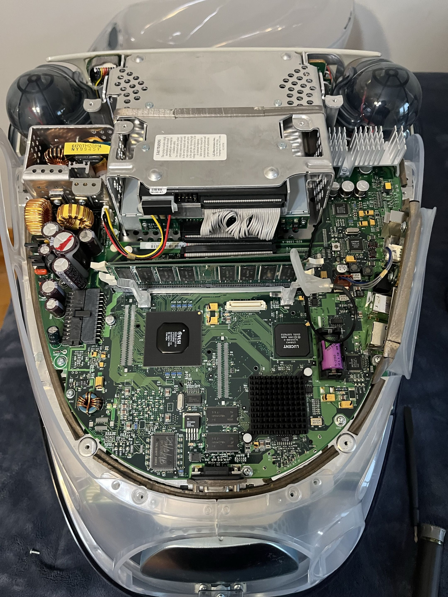
Oh boy… I'm flustered. Honestly, look at that. Look at her speaker breast.
On a serious note, looking at the board is very beautiful. The traces and intricacy of each part being perfectly designed, everything has a place. It's amazing. Parts don't look like this anymore. Are they more efficient and way better long term? Absolutely, no denying that. But do they look cool? Sometimes, but this era is gone so to look back and see how much times have changed from an "engineer" perspective is inspiring.
Hopefully you can appreciate it, and as much as I love SMD, nothing beats the look of a through-hole component. This is why I fell in love with computers.
Through-hole vs SMT — The Digi Source
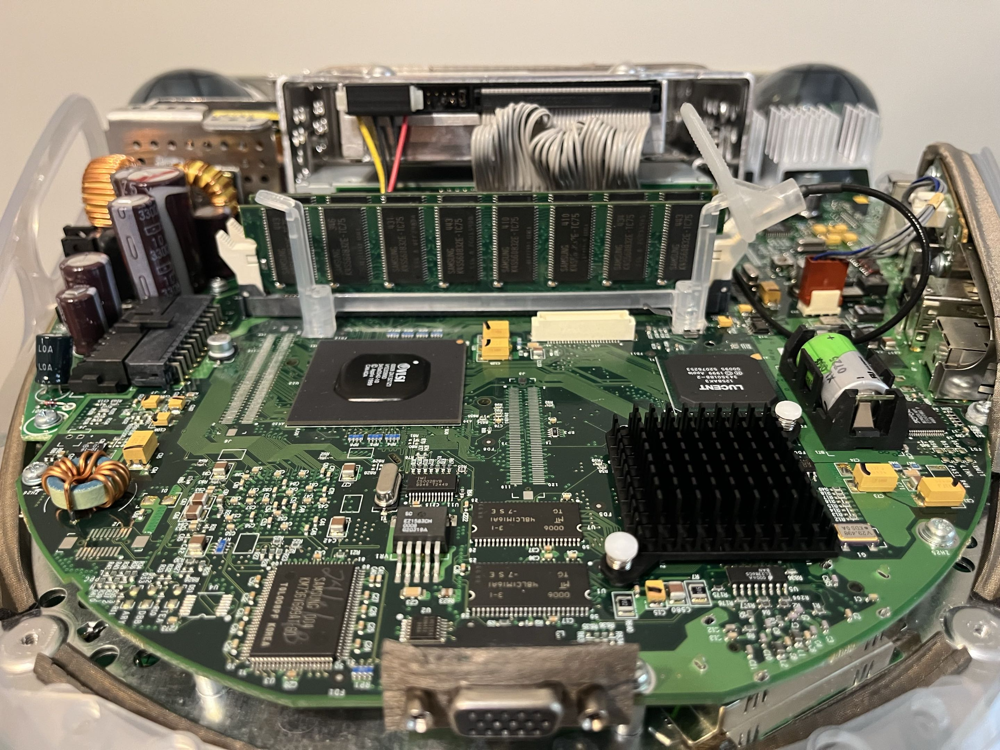
Removed the official Apple RAM sticks and Israeli battery and now it's up. Keep the hard drive the same, don't plan on running huge games on it, just an OS, but 13GB should be fine enough. Being my dashboard just viewing stats for my homelab, it serves its purpose.